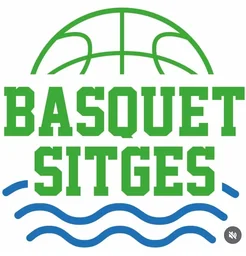
veterans.Veterans Bàsquet Sitges · des de 1957
Cada juny, el Pavelló Pins Vens es converteix en una festa: deu equips de veterans, un poble sencer a la grada i una causa que ho guanya tot. El 4t Torneig Solidari ja escalfa. Baixa: el partit comença.
1r quart · Qui som
Som la secció de veterans del Club Bàsquet Sitges: genolls amb quilòmetres, mans que encara recorden el tir i un vestidor que fa més olor de cafè que de liniment. Juguem per amor a l'esport — i perquè el poble guanyi sempre.
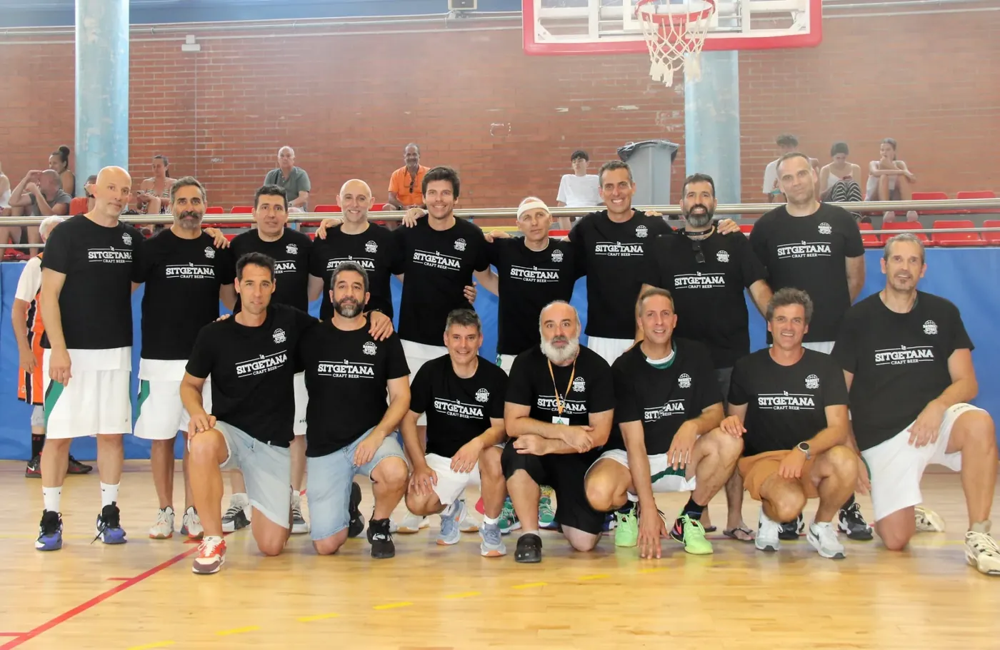
2n quart · El torneig solidari
Des del 2023, cada edició juga per a una causa diferent: la recerca, la salut, la infància. Els punts es fan a la pista, però el marcador que compta és aquest:
recaptats fins avui · i pujant
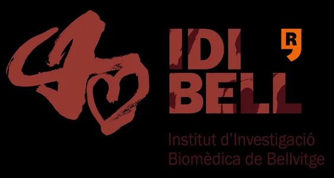
3r quart · La causa 2026
De la mà de l'Hospital Clínic de Barcelona i la Fundació Clínic-IDIBAPS, tot el que es mou el 20 de juny — cada cistella, cada entrepà de la barra, cada samarreta — suma per a la recerca contra el Parkinson.
— A aquest rival no se'l guanya en un partit. Però se'l guanya.
4t quart · 20 de juny de 2026
Veterans del FC Barcelona, València Basket, l'Espanyol, French Connection, Tehran… deu equips i un dia sencer de bàsquet i festa per a tota la família. I quan sona el xiulet, ningú no se'n vol anar.
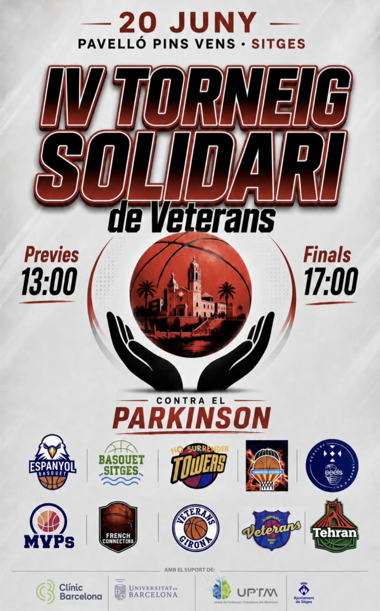
La banqueta · Els equips del 2026
Del FC Barcelona a Tehran: deu plantilles de veterans que vénen a Sitges a guanyar el mateix partit.
Patrocinadors · Suport local
Empreses i comerços de Sitges que fan possible el torneig any rere any — gràcies a ells, tot el que es recapta va sencer a la causa.
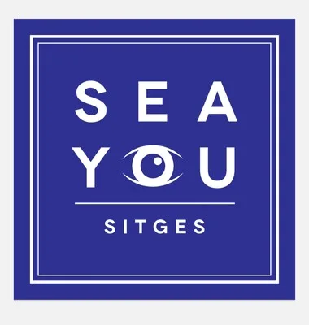
Sea You Sitges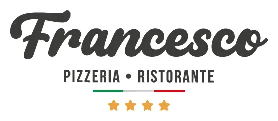
Francesco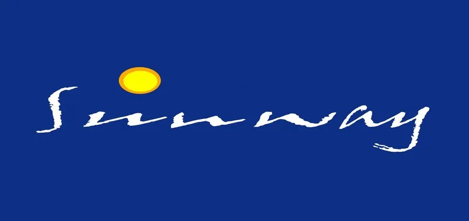
Hotel Sunway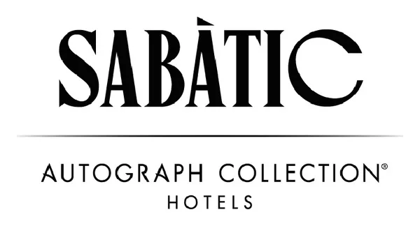
Hotel Sabàtic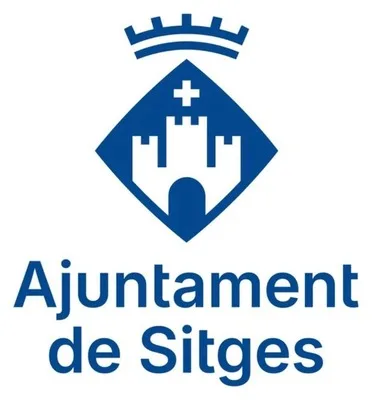
Ajuntament de Sitges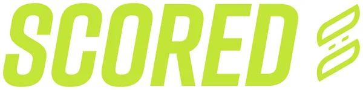
Scored La Sitgetana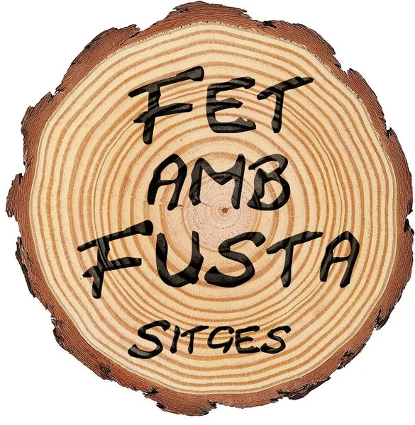
Fet amb Fusta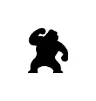
Festival Cine Fantàstic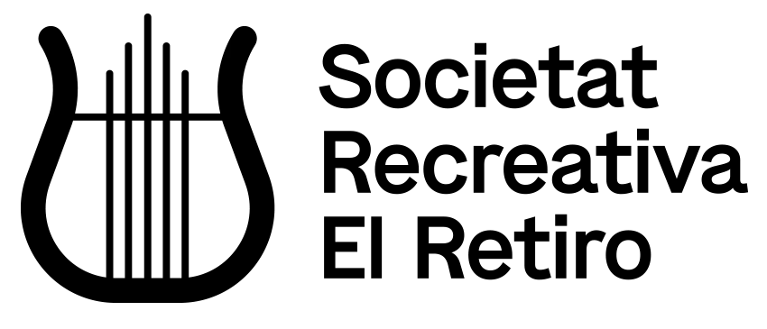
Societat Recreativa El Retiro Casino Prado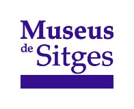
Museus de Sitges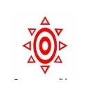
La Tratto Sitges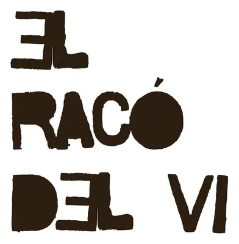
El Racó del Vi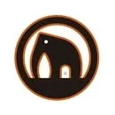
Mammothskate Kela Sitges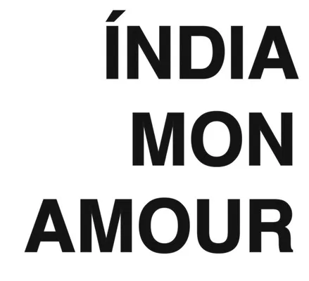
Índia Mon Amour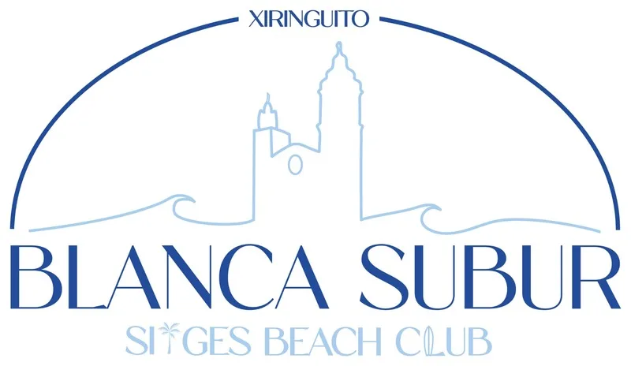
Xiringuito Blanca Subur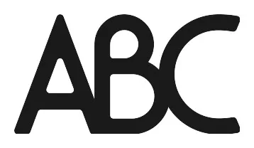
ABC Sitges Castelldefels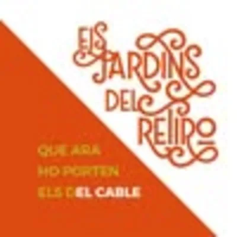
Els Jardins del Retiro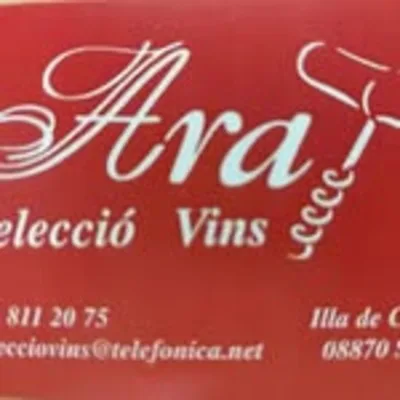
Ara Selecció Vins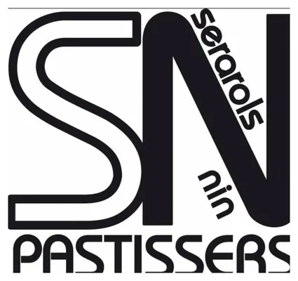
Serrarols Nin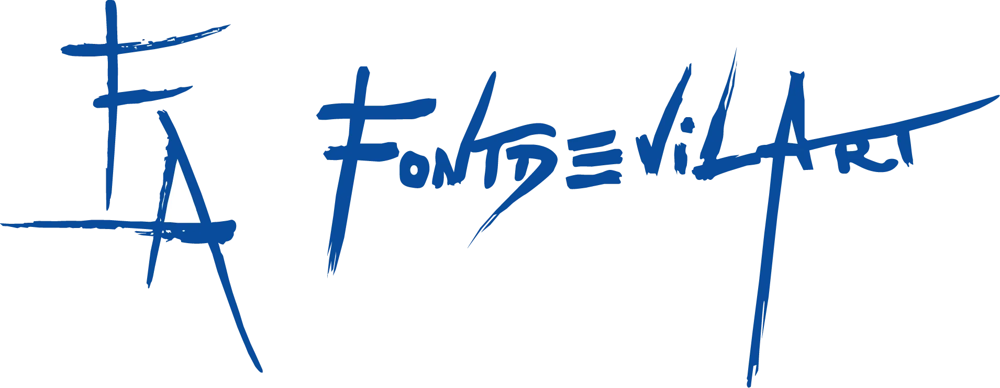
Daniel Fontdevila Cal Pinxo Sitges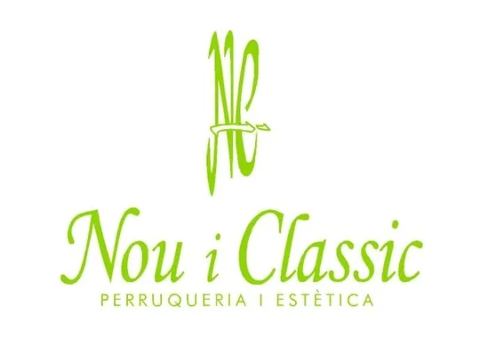
Nou i Clàssic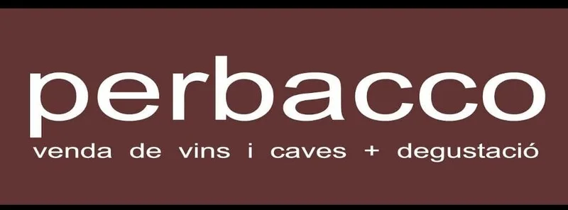
Perbacco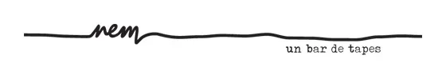
Nem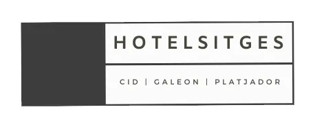
Hotel Sitges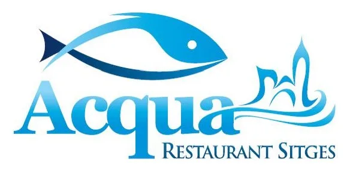
Restaurant Acqua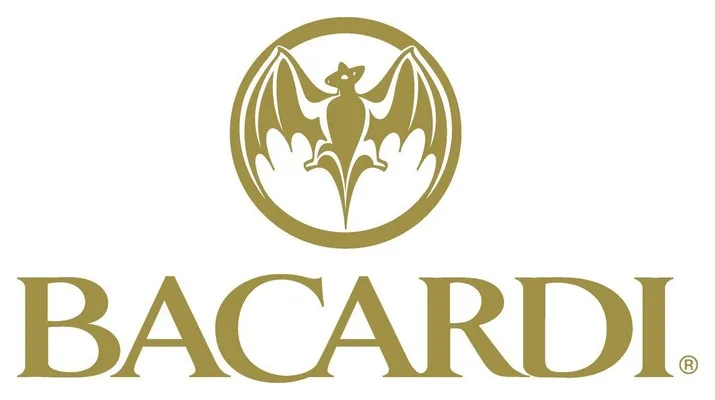
Casa Bacardí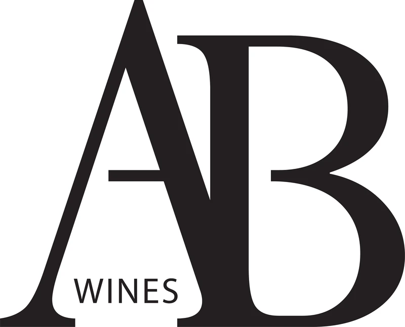
AB WinesXiulet final · Reserva la teva grada